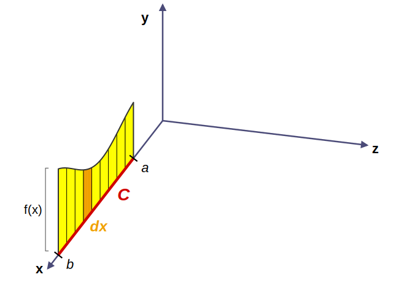
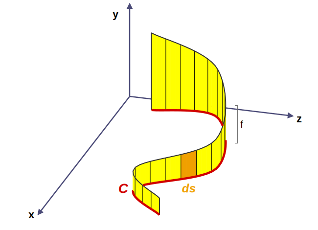
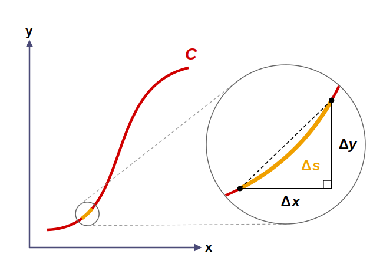
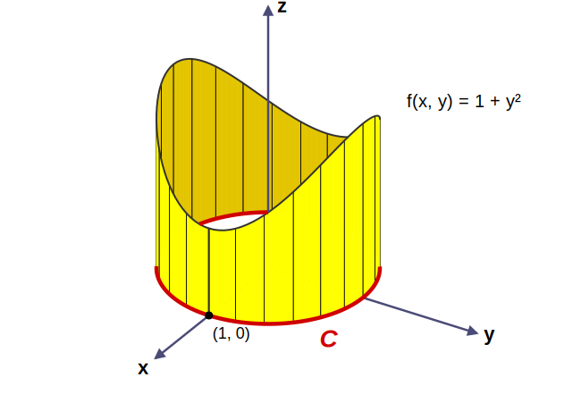
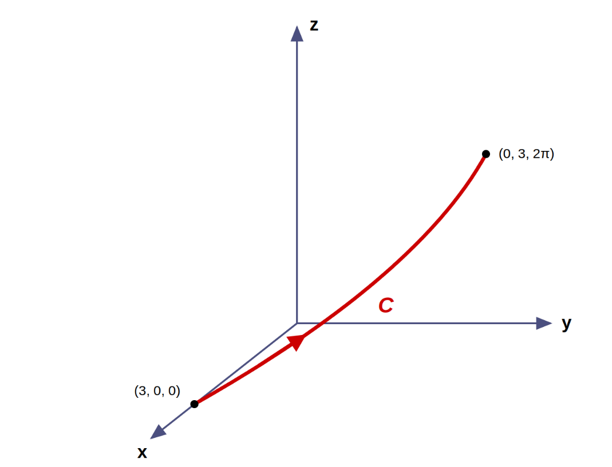

Line Integrals
The definite integral from Calculus I is actually a special case of a more general idea called a line integral.

The figure shows the integral below, which you already know from Calculus I, drawn in three dimensions. The integral gives the yellow area.
The integration is along a line segment, along the \(x\)-axis from \(x = a\) to \(x = b\). It is a line integral! We can extend this idea from a line segment on the x-axis to integration along any curve.
Next, we integrate along a curve \(C\), as in the figure. Above the curve and below the function there is an area, often called a curtain.

In this case, the differential is not \(dx\). The “width” curves in two directions, so we use the differential of arc length, \(ds\). The integral below gives the area of the curtain.
Line Integral with Respect to Arc Length
Put the curve \(C\) in the \(xy\)-plane, and zoom in on a small piece of the curve. By the Pythagorean Theorem:

The curved piece is slightly longer than the hypotenuse, so this is only an approximation. But the smaller the piece, the straighter it looks, and the better the approximation. In the limit, the changes become differentials, and the approximation becomes exact. For a curve given in terms of a parameter \(t\), divide by \(dt\) inside the square root.
Arc Length Differential
An Example
Evaluate the line integral below, where \(C\) is the upper half of the circle \(x = 2\cos t\), \(y = 2\sin t\), \(0 \le t \le \pi\), from \((2, 0)\) to \((-2, 0)\).
Find the derivatives, and then find the arc length differential.
Along the curve, \(x = 2\cos t\), so \(3 - x = 3 - 2\cos t\).
When \(C\) is a closed curve, which ends where it starts, we write the line integral with a circle on the integral sign.

An Example
Evaluate the line integral below, where \(C\) is the unit circle.
Parametrize the unit circle as \(x = \cos t\), \(y = \sin t\), \(0 \le t \le 2\pi\). Then \(ds = \sqrt{\sin^2 t + \cos^2 t}\,dt = dt\).
Use the identity \(\sin^2 t = \frac{1}{2}(1 - \cos 2t)\).
For a line integral in three dimensions, the arc length differential becomes the following.
Arc Length Differential in Space

An Example
Evaluate the line integral below, where \(C\) is the curve given by \(\mathbf{r}(t) = \langle 3\cos t, 3\sin t, 4t \rangle\), \(0 \le t \le \pi/2\).
Along the curve, \(z = 4t\).